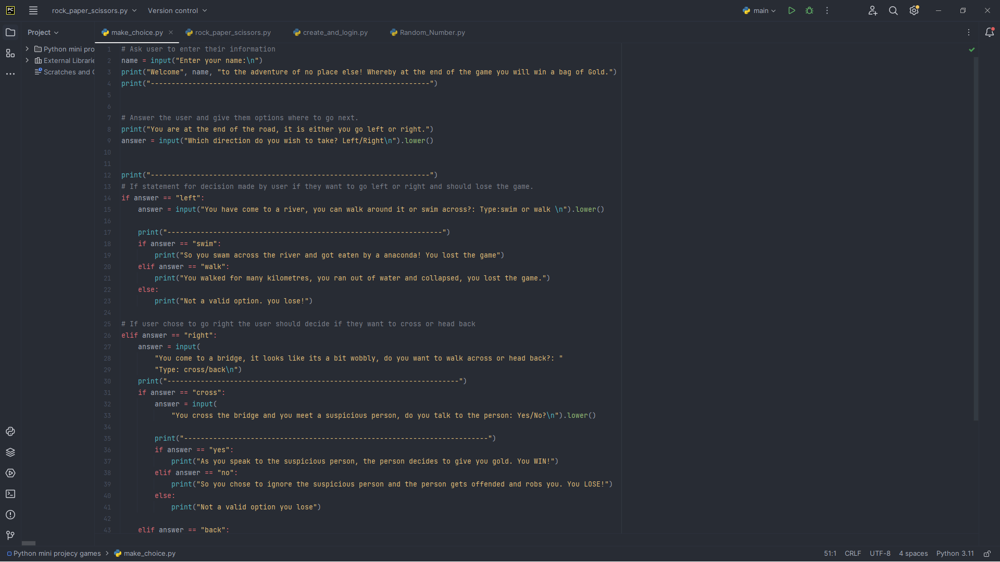
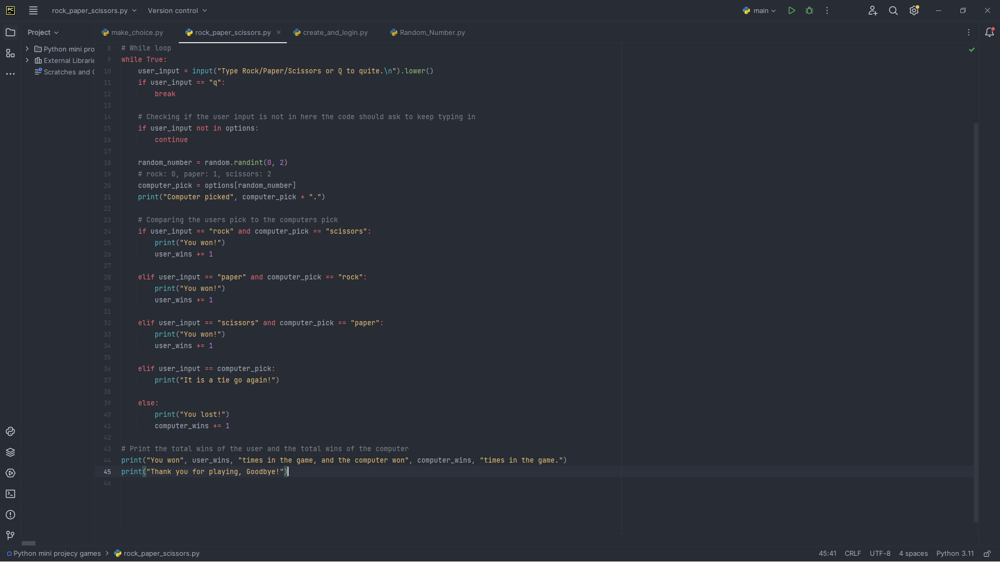
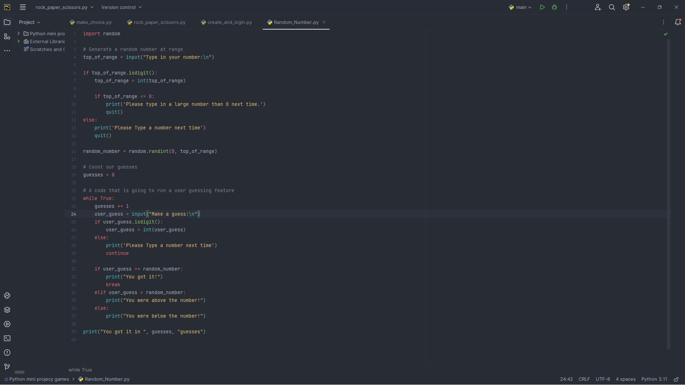

This is a python code for a digital clock that can be used on different types of devices,
from your phone to your tablets, smart watches to your computers.

Mind Game
This is a python based code that allows you to make decisions that will lead you to the end of the game or half way into the game depending on your choices.
By making the right calls you will win Gold at the end of the game.

Rock Paper Scissors
This is a well known game in this world where by you play it physically but in this situation you play against the machine and at the end you will get results
to notify you if you have won or the machine has won.

GenerateNumber Project
This is a python code that generates numbers. You pick a range of numbers for example from 0 - 100 and you gues what number is
will be generated by the machine, if you are close or far from the number the machine will tell you.
LMDevWebsite
It is a website of my portfolio/cv that displays my history and my skills.
Odaddle.com
It is a site where it helps people separate group messages at a certain topic from certain people or keywords to make the
receiver read his/her messages without reading things which are not relate to their interest.